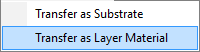

Refractiveindex.INFO Database
OptiChar provides a convenient interface for navigating the refractiveindex.info database.
In the left pane of the Refractiveindex.info database window, you can select the Shelf section and choose a specific material from the Book & Page part. The right pane displays detailed information, including refractive index dispersion and the original source of the data.
With the Transfer button, you can transfer the data to the current Substrate database.
If you need to transfer the data to the Layer Material database, use the submenu accessed by clicking the right arrow on the Transfer button:
